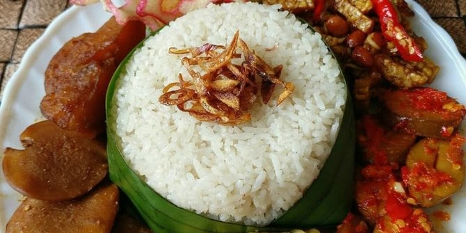

Nasi Uduk

Nasi yang dimasak dengan santan dan disajikan dengan pendamping seperti telur goreng, tempe, tahu, dll.
Bahan yang diperlukan
- 3 cup beras
- 5 cup air santan
- 3 batang serai
- 4 helai daun pandan
- 4 helai daun salam
- 1 sdt jintan bubuk
- Garam secukupnya
Langkah Memasak
- Siapkan beras pada wadah, dan cuci beras sampai bersih. Setelah beras dicuci dengan bersih, masukkan beras pada rice cooker.
- Rebus air santan dengan api sedang, masukkan daun salam, daun pandan, dan garam. Masak hingga mendidih, dan jangan lupa diaduk.
- Masukkan rebusan santan dan beberapa bahan tadi yang sudah dimasak ke dalam rice cooker yang sudah terisi beras. Selanjutnya Anda hanya perlu memasak bahan-bahan tersebut ke dalam rice cooker hingga matang.
- Masukkan daun bawang, aduk kembali.
- Jika sudah matang, sajikan nasi uduk di atas piring dan Anda bisa memberikan bahan-bahan tambahan seperti bihun goreng, tempe kering, telur dadar iris, bakwan goreng, kerupuk, dan lain sebagainya.
Back to Menu